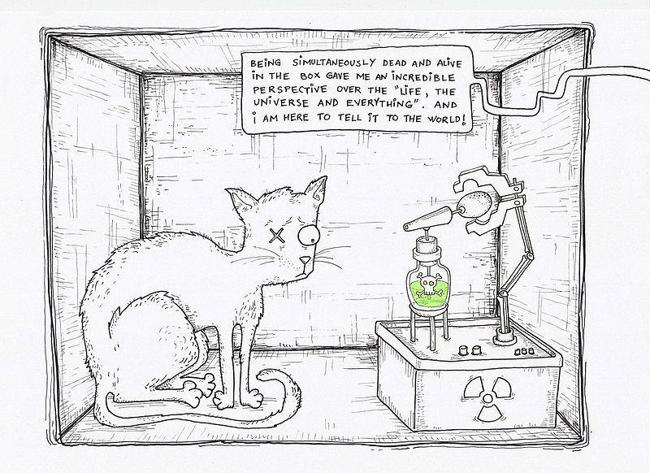

What is hope without cause? It is our abandoned epiphany.
When we survive, we endure and learn. When we triumph, we conquer our strength of will; and extend our mental limitations. Whether that be from a freak accident, a Near Death experience or even barely escaping a horrific situation. It is our natural way of overcoming our fears. Everything we do in life, is a step to pushing that boundary. When we survive, that line is pushed to its limit. We then, become instinctual and hyper aware, responding accordingly.
To put into simple terms, We DON’T want to die. Which is why we work; we eat and dream. We want what’s best for us, and that’s that humanity in us, to strive for better; not worse. Leave an animal locked in a box, and it will do its best to crawl out. Same goes for us, knowing well that in the end we’ll all meet that eventual fate regardless. That is why we dream; we survive to dream. To dream of a better life, to dream for a promotion, to travel the world, and of the things you hope to achieve one day.

We all dream. If not when we go to sleep at night, but when things are hard. When tomorrow doesn’t seem too possible anymore, and everything you had hoped for falls apart. The day you lose your job, you had worked so hard for or the cute girl you always wanted to go out with takes a massive load of shit on your face. That’s surviving, and we as Americans; do it every day, the “American Dream”.
Essay / Christian O. Reyes
Money God
The world does not want you to make the thing you believe in. It wants you to make the thing it already knows how to sell.
In George Orwell’s Keep the Aspidistra Flying most recently adapted by Alan Plater and Robert Bierman in A Merry War Richard E. Grant plays Gordon Comstock, the novel’s protagonist. He is a failed poet who wages a one-man war against what Orwell calls the “money god”: the idea that every human activity, including art, must ultimately be measured in money and marketability.
Gordon refuses to sell out. He quits a promising advertising career, takes a job in a bookshop, and chooses voluntary poverty as the price of keeping his artistic soul intact. He is, by almost any measure, a disaster. And yet I recognize something in him that I do not want to dismiss. His rebellion becomes absurd, self-defeating, and finally collapses, but it is a rebellion against an oppressive financial structure.
The aspidistra of the title is the unkillable houseplant that sits in every respectable British parlor, a symbol of bourgeois conformity, of the life of quiet compromise that is always waiting to absorb you. Orwell understood, deeply and without sentimentality, that the pressure on the artist comes from the fact that the world does not want you to make the thing you believe in. It wants you to make the thing it already knows how to sell.
Where I depart from Gordon Comstock and where I think Orwell himself, through the novel’s uncomfortable ending, means for us to depart is in the conclusion he draws. Gordon’s mistake is that he confuses suffering with seriousness, and poverty with purity. He becomes so preoccupied with refusing to sell out that he stops actually making anything. He is paralyzed by his own idealism.
The lesson I take from Aspidistra is not that commercial compromise is inevitable or even acceptable. It is that the commitment to craft must be active and disciplined, not merely defiant. You cannot protect your artistic soul by retreating into resentment. You protect it by working, by learning, by becoming so fluent in your tools and so clear in your vision that the compromises you are asked to make become easier to identify and refuse.